| 日付 | 2010年5月29日（土） - 2010年5月30日（日） |
|---|---|
| 山域 | 北アルプス |
| メンバー | 友人、家族 |
| アクセス | 電車、バス |
両親に上高地旅行に誘われたので、彼女を連れて参加することにする。
北アルプスには良く行くが、上高地に行くのは槍ヶ岳に登ったとき以来の3年ぶりだ。
過去何度か上高地に来た事があるが、未だかつて晴れた事が無い。
今回も土曜、日曜とも曇予報だ。
1日目
本日は夕方に宿で家族と合流予定。
まずは大正池を見物した後、上高地まで歩くことにする。

大正池に降り立つと、目の前に穂高岳が現れる。
曇予報だったはずだが、空には青空が広がっていて見事な展望だ。
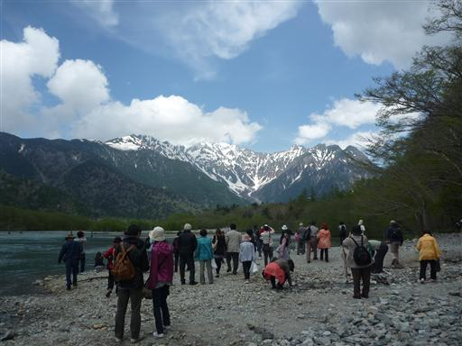
大正池の縁に付けられた遊歩道を歩いていく。
オフシーズンだと思っていたが、それなりに観光客は多い。
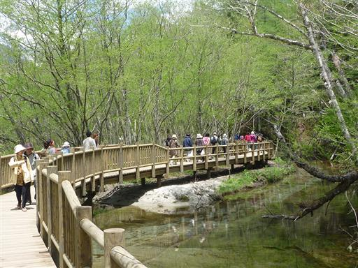
静かな水面は鏡のようだ。
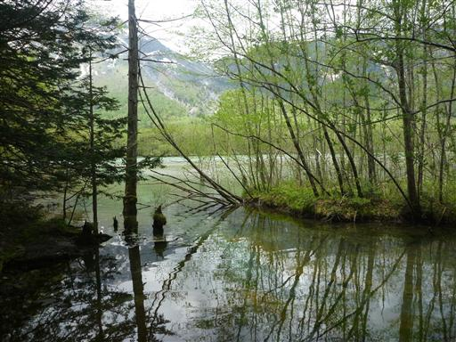
大正池の向こう側には丸い頭の焼岳が聳えている。
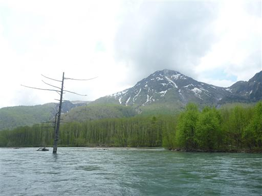
白い河原に出てくる。展望が良く広々としているので、ここで昼食をとることにする。
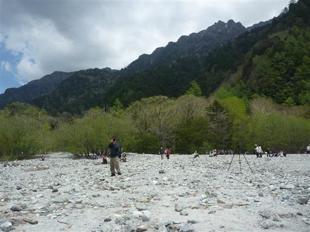
昼食をとっていると、カモが寄ってくる。食べ物を狙っているのだろう。
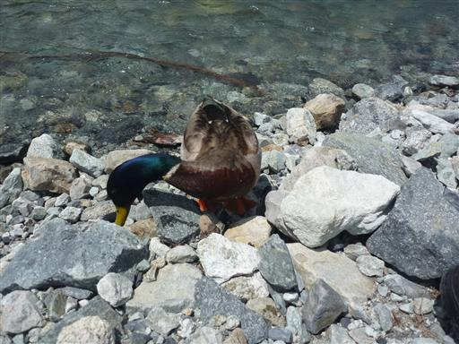
大正池には所々に枯木が点在している。
焼岳の爆発によって大正池ができて木は水没してしまった。
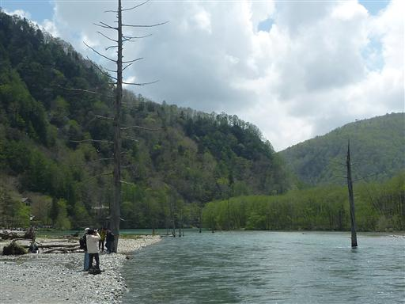
梓川に注ぐ小川。まさに春という景色だ。
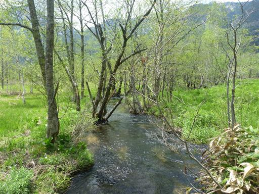
田代池に到着。池というよりも少し広がった川という感じだ。
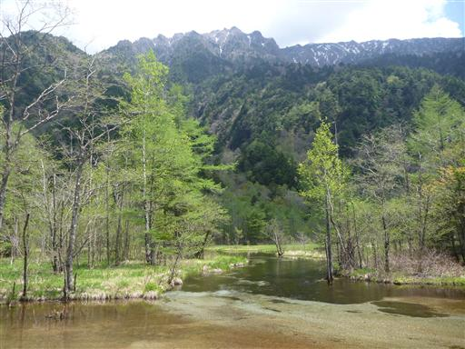
水中を見ると小さな魚が泳いでいる。

遊歩道の側を流れる梓川は不思議なほど青い色をしている。
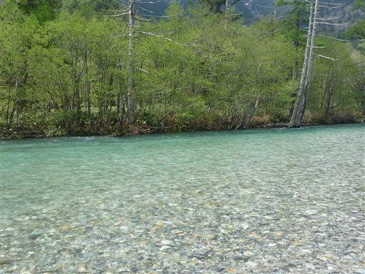
梓川に注ぐ小川。こちらは水底に綺麗な藻がびっしりと生えている。
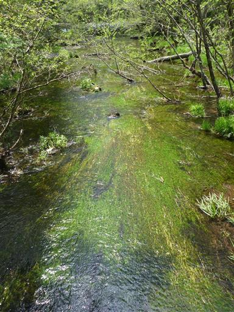
西穂高岳登山口に到着。何年前の事か忘れたが、
西穂高独標から下ってきた時にこのゲートをくぐって上高地に辿り着いたのを覚えている。
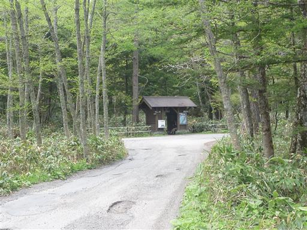
ここからは梓川の右岸を歩いていく。対岸に見えるのは六百山と霞沢岳だ。
穂高岳と焼岳が目立つので、こちらの山々は地味な存在だ。
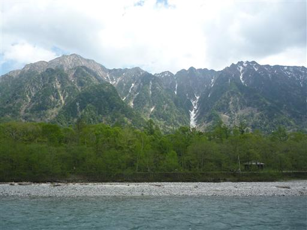
上高地のシンボル・河童橋に到着。
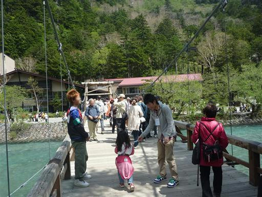
河童橋近辺は大勢の人で賑わっている。
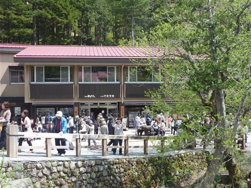
河童橋から望む穂高岳。上高地を代表する景観だ。
初めて河童橋から穂高岳の全容が望めた。
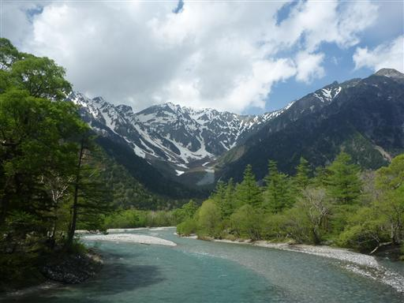
河童橋の前では舞踊が披露されている。
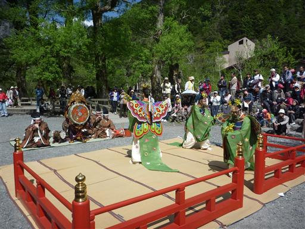
大勢の観光客が集まって来る。
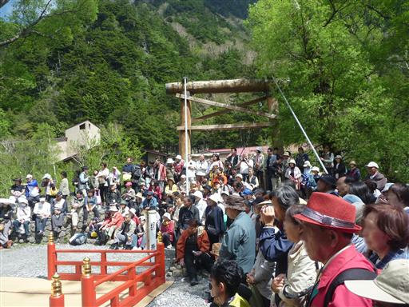
まだ時間が早いので、少し岳沢を登ってみることにする。
穂高岳に通じる登山道で、木の無いところに出れば少しは展望が広がるだろう。
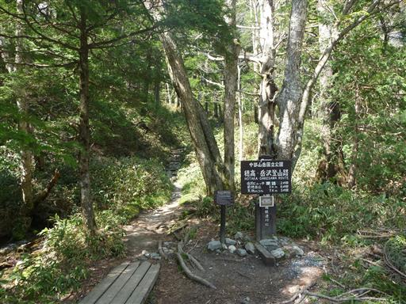
岳沢登山道は所々に石が配置されていて非常に歩きやすい。
岳沢にあった小屋は以前、雪崩でつぶれてしまったが、再建中らしい。
再建されたらこの登山道も再び人で賑わうことだろう。
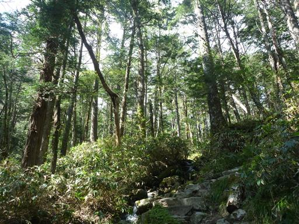
足元にシロバナエンレイソウが咲いている。
葉も額も花弁も3つの特徴ある形の花だ。
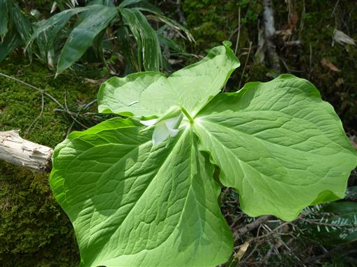
こちらはコミヤマカタバミ。
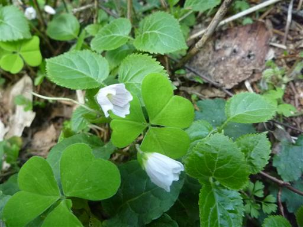
途中、崖崩れが発生していて登山道が塞がれている。
太い幹も全てなぎ倒されている。倒木を乗り越えて先に進む。
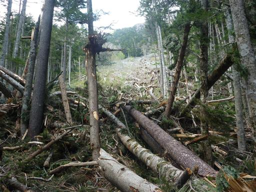
小さな沢に出てくると残雪がまだたっぷりと残っている。
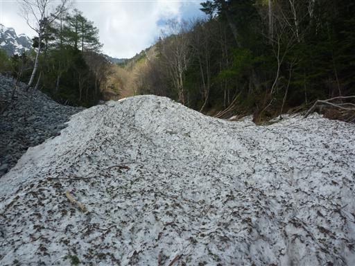
残雪の側には叩けばこけそうな細いケルンが積まれている。
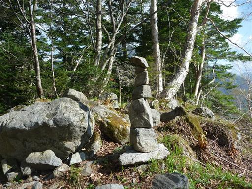
岳沢の岩石地帯に出てくると、途端に展望が大きく広がる。
眼下には上高地、その向こうの鋭いピークは六百山だ。
少し登っただけだが、上高地からとはまた違う展望が広がる。

遠くに見える巨大な山塊は乗鞍岳だ。
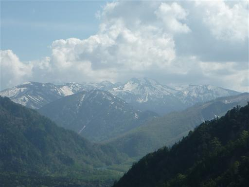
岳沢の石の上を20分ほど登る。目の前には屏風のように穂高岳が連なっている。
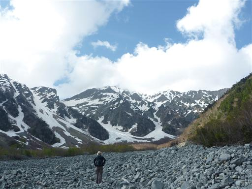
再び上高地に戻ってくる。だいぶ日が落ちてきた。
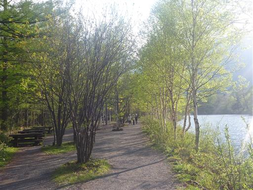
遊歩道脇にエゾムラサキが咲いている。非常に小さな花だ。
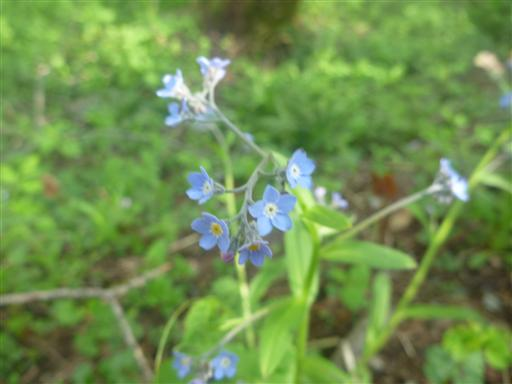
本日の宿、上高地アルペンホテルに到着。
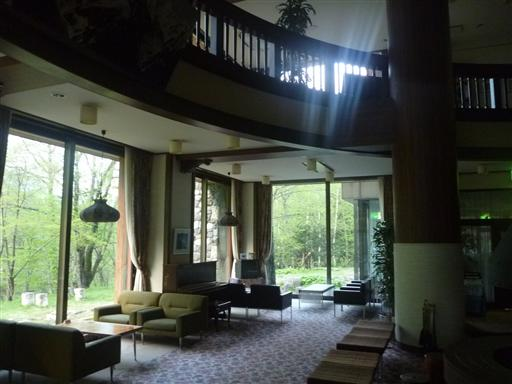